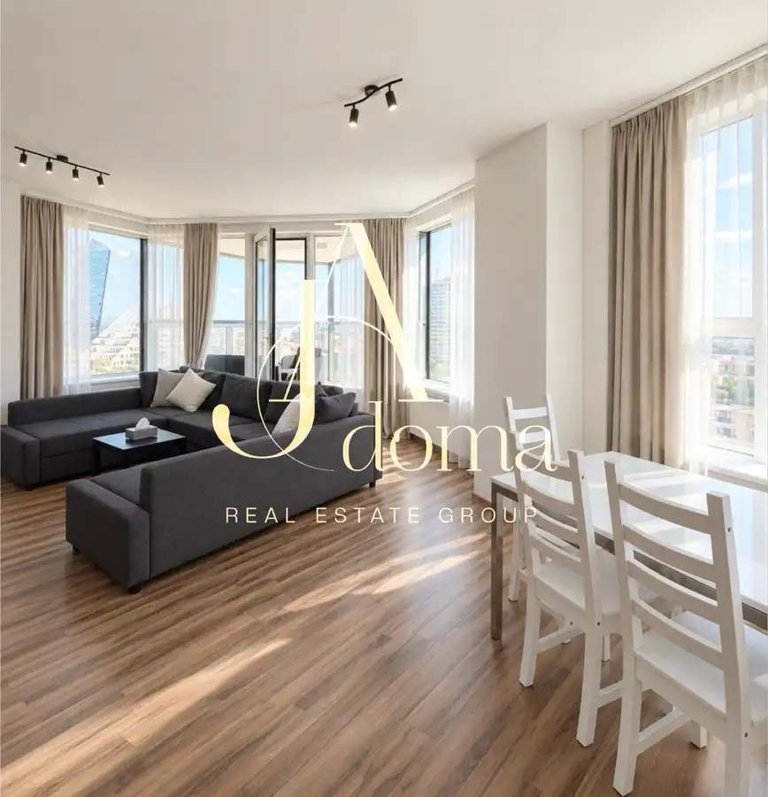
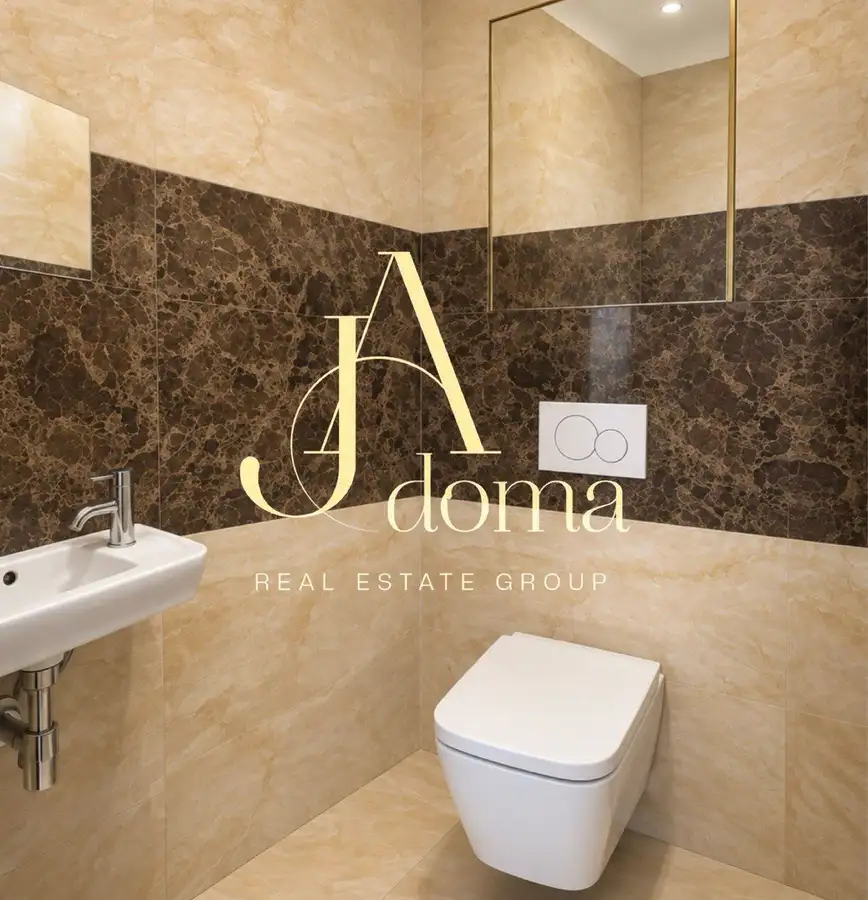
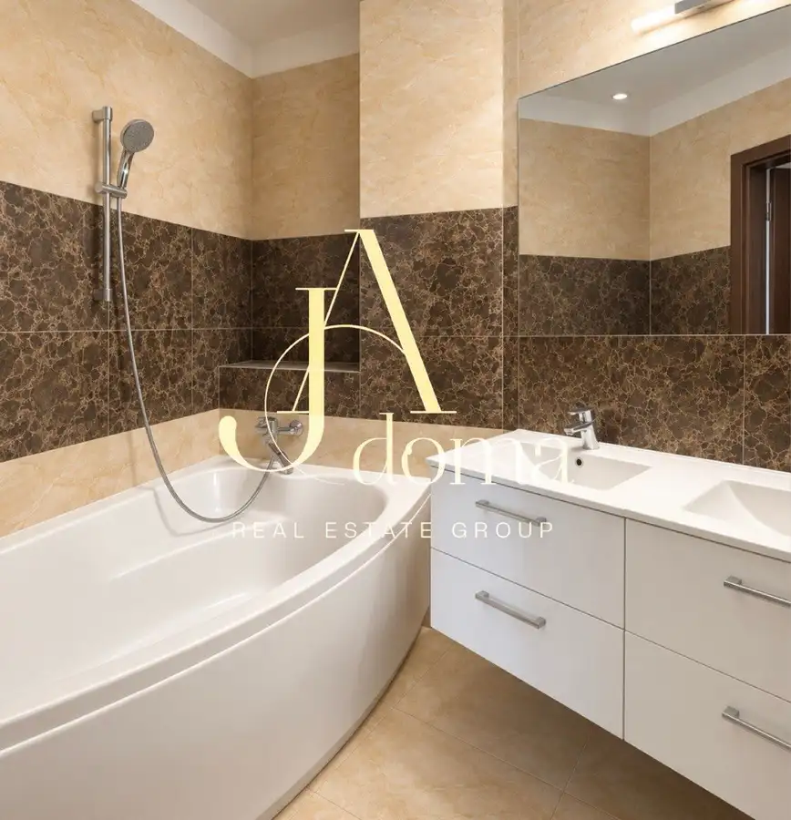
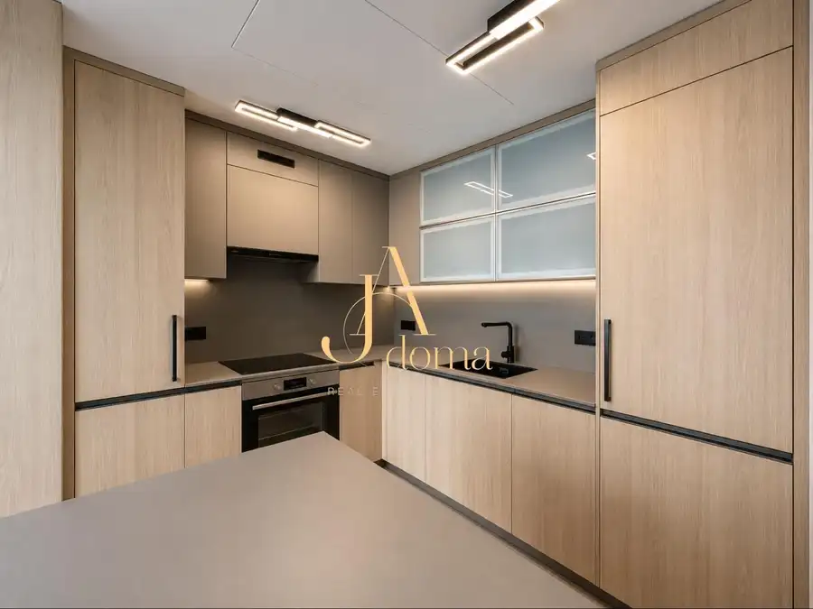
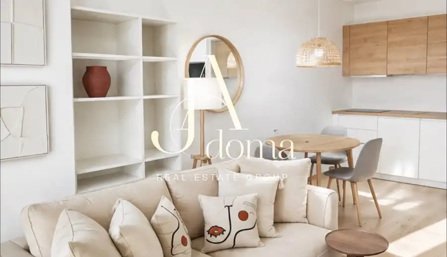
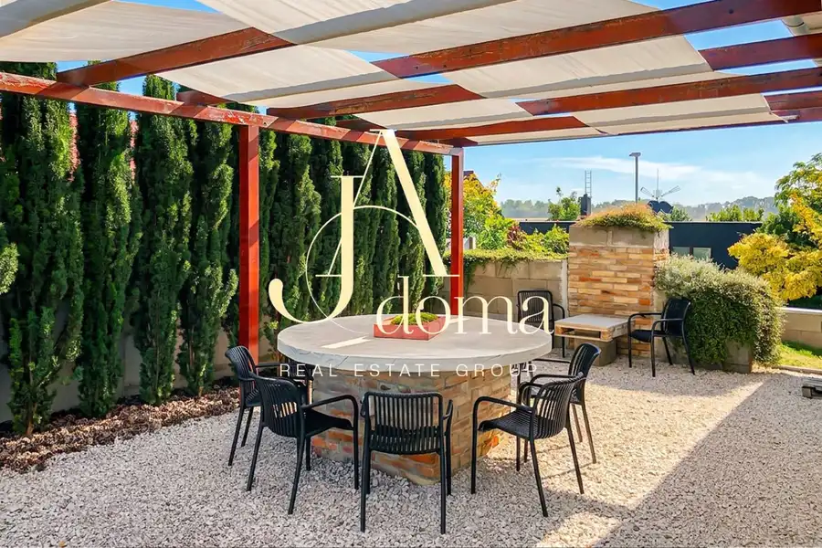

PET-Friendly | Foreign-friendly | Priestranný a svetlý 3-izbový byt v Panorama City na 18. poschodí s výhľadom na Dunaj a panorámu Bratislavy
Staré Mesto, Bratislava




- Dispozícia3-izbový
- Plocha90 m²
- Poschodie18. z 33
- StavNovostavba
- VlastníctvoOsobné
- Energetická triedaA
O nehnuteľnosti
Realitná kancelária JAdoma Vám exkluzívne ponúka na prenájom priestranný a kompletne zariadený 3-izbový byt v prestížnom rezidenčnom projekte Panorama City, v srdci moderného downtownu Bratislavy.Predstavte si ráno, keď byt naplní príjemné východné slnko. Otvoríte dvere na priestrannú lodžiu, vychutnáte si rannú kávu a pred Vami sa rozprestiera moderná panoráma bratislavského downtownu. Večer sa veľká lodžia mení na ideálne miesto oddychu – pohár vína, svetlá mesta a pokojnáVďaka severo-východnej orientácii je byt krásne presvetlený najmä v dopoludňajších hodinách, zatiaľ čo popoludní ponúka príjemnejšiu klímu bez intenzívneho západného slnka.Byt ponúka praktickú dispozíciu s dvoma samostatnými nepriechodnými izbami, veľkorysý spoločenský priestor a výbornú polohu len pár krokov od Eurovey a nábrežia Dunaja.Dispozícia a vybavenie• klimatizácia v každej izbe• svetlá obývacia izba prepojená s jedálenskou časťou• spálňa s manželskou posteľou a veľkou šatníkovou skriňou• druhá izba vhodná ako detská izba, pracovňa alebo hosťovská izba• všetky izby sú samostatné a nepriechodné• priestranná lodžia s posedením a s krásnym výhľadom na Dunaj a panorámu mesta• východná orientácia – príjemné ranné a dopoludňajšie slnko• priestranná vstupná chodba s úložným priestorom• kúpeľňa s vaňou a práčkou • kvalitné drevené podlahy• veľkoformátové okná, ktoré zabezpečujú dostatok prirodzeného svetla• byt sa prenajíma kompletne zariadený a pripravený na nasťahovanie• pivničná kobka 3,5 m³ – praktický dodatočný úložný priestorInteriér je ladený do príjemných neutrálnych tónov a pôsobí svetlo, čisto a vzdušne. Veľkou výhodou je praktické rozdelenie dennej a nočnej časti bytu, vďaka čomu poskytuje dostatok súkromia aj pri bývaní viacerých osôb.Projekt Panorama CityPanorama City patrí medzi najznámejšie a najvyhľadávanejšie rezidenčné projekty v Bratislave. Spája modernú architektúru, vysoký štandard bývania a jednu z najlepších lokalít v meste.Rezidenti majú k dispozícii:• 24/7 recepciu a SBS službu• reprezentatívne spoločné priestory• upravený vnútroblok so zeleňou• detské ihrisko a oddychové zóny• kvalitnú správu a údržbu bytového domu• potraviny a služby priamo v projekte• kaviarne a reštaurácie v bezprostrednom okolíLokalitaJednou z najväčších predností tejto ponuky je jej poloha.Panorama City sa nachádza priamo v modernom centre Bratislavy, kde máte prakticky všetko potrebné na každodenný život v pešej dostupnosti.• OC Eurovea a nábrežie Dunaja len pár minút pešo• Nivy centrum a autobusová stanica v blízkosti• Slovenské národné divadlo• množstvo reštaurácií, kaviarní, obchodov a služieb• fitness centrá a športové možnosti• promenáda pri Dunaji ideálna na prechádzky, beh alebo bicykel• historické centrum Bratislavy v pešej dostupnosti• rýchle napojenie na hlavné dopravné ťahy a diaľničný obchvatLokalita je ideálna pre klienta, ktorý chce bývať v centre diania, no zároveň oceňuje komfort, bezpečnosť a súkromie moderného rezidenčného projektu.Názor makléra„Na tomto byte oceňujem predovšetkým jeho veľmi príjemnú atmosféru. Východná orientácia prináša do interiéru krásne ranné svetlo a lodžia vytvára miesto, kde si môžete vychutnať kávu s výhľadom na modernú panorámu Bratislavy.Veľkou výhodou sú tiež dve samostatné nepriechodné izby a praktická dispozícia. Byt je preto vhodný nielen pre pár, ale aj pre rodinu alebo klienta, ktorý potrebuje samostatnú pracovňu na home office.Panorama City navyše patrí medzi projekty, ktoré ponúkajú komfortné mestské bývanie na adrese, kde auto pri každodennom živote prakticky nepotrebujete.Cena prenájmu:Nájomné za byt a pivničnú kobku: 1 900 € / mesiacEnergie: 300 € / mesiacParkovacie statie v garaži doma: 100 € / mesiac (nie je podmienkou prenájmu). Možnosť prenájmu aj druheho parkovacieho statia Depozit: vo výške jednomesačného nájomného Provízia RK: vo výške jednomesačného nájomného Provízia realitnej kancelárii zahŕňa kompletný profesionálny servis a bezpečný priebeh prenájmu:✓ obhliadku a komunikáciu s majiteľom✓ prípravu a kontrolu nájomnej dokumentácie✓ asistenciu pri podpise zmluvy a odovzdaní bytu✓ preverenie podmienok prenájmu a transparentné nastavenie platieb✓ podporu počas procesu nasťahovania✓ asistenciu pri ročnom vyúčtovaní energií a služieb✓ úsporu času, bezpečnosť a profesionálne zastrešenie celého prenájmu – od prvej obhliadky až po protokolárne odovzdanie nehnuteľnosti na konci nájmu✓ bezplatné vyhotovenie dodatku k nájomnej zmluve v prípade pokračovania nájmu na ďalšie obdobie / ďalší rokVďaka realitnej kancelárii prebieha celý proces komfortne, bezpečne a bez zbytočných komplikácií.Byt je pripravený na nasťahovanie.Inzerát je platný do vymazania.Ing. Mgr. Julia Kyslatel.: +421 951 520 028 (WhatsApp, Telegram)julia@jadoma.skIng. Bc. Andrii Kyslyi, RSc.tel.: +421 949 418 208 (WhatsApp, Telegram)andrej@jadoma.skText, fotografie a video sú autorským dielom a majetkom RK JAdoma
Parametre
- Cena vrátane energií
- Nie
- Druh
- 3 izbový byt
- Dátum zverejnenia
- 30. 09. 2026
- Energetický certifikát budovy
- A
- Energie
- 300
- Orientácia
- Severovýchodná
- Podlažie
- 18
- Počet lodžií
- 1
- Počet nadzemných podlaží
- 33
- Počet parkovacích miest v garáži
- 2
- Rok výstavby
- 2016
- Stav nehnuteľnosti
- Novostavba
- Telekomunikácie
- Optická sieť, Internet
- Typ
- Prenájom
- Typ konštrukcie
- Železobetónová
- Vlastníctvo
- Osobné
- Vybavenie
- Lodžia, Garážové státie
- Vykurovanie
- Klimatizacia, Rekuperácia
- Úžitková plocha
- 90 m²
Kde to je


Mohlo by Vás zaujímať

BytNové 725 000 €Exkluzívne na predaj - 3-izbový byt v projekte Sky Park v centre Bratislavy Staré Mesto, Bratislava 3-izbový102 m²6. podlažie
BytNové 1 450 €PET-Friendly. Foreign-friendly. Kompletne zariadený 2-izbový byt s pivnicou a garážovým státím v prestížnom projekte Eurovea Tower Staré Mesto, Bratislava 2-izbový58 m²12. podlažie
BytNové 280 000 €Exkluzívne na prendaj - 4-izbový rodinný dom s príjemnou atmosférou v Kráľova pri Senci Kráľová pri Senci 4-izbový80 m²1. podlažie